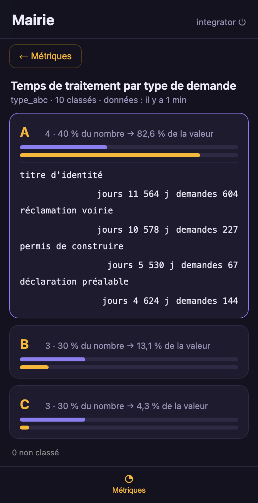

Logiciel de suivi des demandes legacy: quatre types de demande font 83 % du temps de traitement d'une mairie
Objectif Savoir quels types de demande concentrent le temps de traitement, de l'ouverture à la clôture.
Une mairie exporte ses demandes, une ligne par demande, avec la date d'ouverture et la date de clôture. Tout le monde pense que le temps part dans l'état civil, la moitié des demandes. Personne n'a additionné les jours par type.
- la durée calculée à l'entrée par le script de l'opérateur
- un classement A, B, C des types par jours de traitement
- « acte d'état civil », le type le plus fréquent: en B
demande;type;service;ouverte_le;cloturee_le D26-00001;acte d'état civil;état civil;02/01/2026;04/01/2026 D26-00002;acte d'état civil;état civil;02/01/2026;03/01/2026 D26-00003;acte d'état civil;état civil;02/01/2026;04/01/2026 D26-00004;acte d'état civil;état civil;02/01/2026;03/01/2026 D26-00005;inscription scolaire;affaires scolaires;02/01/2026;06/01/2026 D26-00006;réclamation voirie;services techniques;02/01/2026;04/03/2026 D26-00007;réclamation voirie;services techniques;02/01/2026;15/02/2026 D26-00008;titre d'identité;état civil;02/01/2026;21/01/2026 D26-00009;titre d'identité;état civil;02/01/2026;18/01/2026 D26-00010;titre d'identité;état civil;02/01/2026;18/01/2026 D26-00011;acte d'état civil;état civil;03/01/2026;04/01/2026 D26-00012;acte d'état civil;état civil;03/01/2026;04/01/2026 D26-00013;acte d'état civil;état civil;03/01/2026;04/01/2026 D26-00014;acte d'état civil;état civil;03/01/2026;05/01/2026 D26-00015;inscription scolaire;affaires scolaires;03/01/2026;08/01/2026 D26-00016;recensement citoyen;état civil;03/01/2026;04/01/2026 D26-00017;recensement citoyen;état civil;03/01/2026;04/01/2026 D26-00018;titre d'identité;état civil;03/01/2026;27/01/2026 D26-00019;acte d'état civil;état civil;04/01/2026;05/01/2026
… 3316 lignes de plus
manifests/duree-traitement.kts
// Operator-provided: a request's processing duration, in days, from its opening to its closing.// The software writes dates as dd/mm/yyyy. A request still open has no closing date: no duration yet, not zero.// A date in any other shape is declared unreadable: counted, not guessed.@Suppress("UNCHECKED_CAST")val cells = bindings["cells"] as MutableMap<String, Any?>val french = java.time.format.DateTimeFormatter.ofPattern("dd/MM/uuuu") .withResolverStyle(java.time.format.ResolverStyle.STRICT)fun day(text: Any?): java.time.LocalDate? = text?.toString()?.trim()?.takeIf { it.isNotEmpty() }?.let { java.time.LocalDate.parse(it, french) }try { val opened = day(cells["ouverte_le"]) val closed = day(cells["cloturee_le"]) cells["jours"] = if (opened == null || closed == null) null else java.time.temporal.ChronoUnit.DAYS.between(opened, closed).toString()} catch (e: java.time.format.DateTimeParseException) { (bindings["unreadable"] as Runnable).run()}manifests/10-demandes.yaml
apiVersion: connectors.lumnik.io/v1kind: Connectormetadata: name: scenario-mairie-a connector_type: csv-file scopes: [mairie-a]spec: transport: kind: sftp host: host.docker.internal port: 2236 user: gru path: /exports/demandes.csv password_env: SCENARIO_MAIRIE_A_SFTP # The fingerprint the export server presents, read out of band (ssh-keyscan | ssh-keygen -lf -). host_key_fingerprint: "SHA256:FINGERPRINT_READ_AT_REPLAY" parser: has_header: true delimiter: ";" encoding: UTF-8 after_process: none mapping: cell: - kotlin: script: hooks:duree-traitement-a.kts # the operator's script: days from opening to closing - parse-number: { column: jours, decimal-separator: "." }manifests/20-demande.yaml
kind: Entityname: ScenarioMairieDemandesAmatch: [demande]scopes: [mairie-a]sources: - table: t_scenario_mairie_a map: demande: demande type: type service: service ouverte_le: ouverte_le cloturee_le: cloturee_le jours: joursmanifests/30-types.yaml
apiVersion: apps.lumnik.io/v1kind: Metricmetadata: name: scenario_mairie_types_aspec: scope: mairie-a title: Temps de traitement par type de demande description: Les types de demande classés A, B, C par jours de traitement, de l'ouverture à la clôture, janvier à octobre 2026. source: entity: ScenarioMairieDemandesA by: [type] # the type of request: a request itself is read in Fiches measures: jours: { sum: jours, unit: j } # closed requests only: an open one has no duration yet demandes: { count: rows } across: type_abc: { preset: abc, of: jours }$ lm hook scripts
NAME SIZE SHA256
cfonb-amount-b.kts 784 3f94b73a8a923324f6750648e230e3d91026299ed636627a4562b14552d493ba
cfonb-amount-c.kts 784 3f94b73a8a923324f6750648e230e3d91026299ed636627a4562b14552d493ba
coordinates-c.kts 5076 cc87f4a8e8ccbb38f3306d4dce5a013dab984c36a8cd72afd72e8bd142504542
duree-traitement-n1127.kts 1008 e6bafc91788033658dee4859e5ada6c51cfe757cb6a9e21ad45ea34ce071457d
ean-check-b.kts 477 58c3d6b83a0df5c9ae779aada8604f6bd850db7c52ca258b5bc6dc45fd8ea23c
ean-check-c.kts 477 58c3d6b83a0df5c9ae779aada8604f6bd850db7c52ca258b5bc6dc45fd8ea23c
ean-check-d.kts 477 58c3d6b83a0df5c9ae779aada8604f6bd850db7c52ca258b5bc6dc45fd8ea23c
ean-draft-b.kts 476 c8692d84859f810de8903ded14a03a1ec4db93e1282aa88b4fb9f5e42b6586ea
ean-draft-c.kts 476 c8692d84859f810de8903ded14a03a1ec4db93e1282aa88b4fb9f5e42b6586ea
ean-draft-d.kts 526 90a58aae66c5feec5e52017e90d86b9ee93e46ce7d97dc0c1eb4b5faefb636a7
promised-date-b.kts 1407 44ceece5d17c40d337374d02f942aef41b092b6708ff7dbc48efc8b43aef1ac9
shipping-fee-c.kts 333 c1c59e5c7b81302d5a284c9c722ca8cacaca0fe859c8ae1c393cd1d54a1ad9ad
shipping-fee-p.kts 333 c1c59e5c7b81302d5a284c9c722ca8cacaca0fe859c8ae1c393cd1d54a1ad9ad
$ lm apply -f 10-demandes.yaml
Applied connector "scenario-mairie-n1127" — 1 endpoint
$ lm connector run scenario-mairie-n1127
run scheduled: 09b7edd2-8663-42d9-a02b-6fb98b546844
$ lm run get 09b7edd2-8663-42d9-a02b-6fb98b546844 --wait-evaluated
ID CONNECTOR ENDPOINT STATUS IN OUT SKIPPED DEAD-LETTERS STARTED ENDED EVALUATED
09b7edd2 scenario-mairie-n1127 default Completed 3335 3335 0 0 2026-11-27 22:59 2026-11-27 22:59 yes
• script hooks:duree-traitement-n1127.kts sha256 e6bafc91788033658dee4859e5ada6c51cfe757cb6a9e21ad45ea34ce071457d
$ lm entity apply -f 20-demande.yaml
Applied entity "ScenarioMairieDemandesN1127" → connector."v_scenariomairiedemandesn1127"
$ lm metric apply -f 30-types.yaml
Applied metric "scenario_mairie_types_n1127" (definition version 1)- run
- IN 3335 · OUT 3335 · cell errors 0
preuves: replay.log, 00-check-types.txt, 01-hook-scripts.txt, 02-run.json, 06-class-a.json, 05-metric.txt · transform v1
$ lm metric get scenario_mairie_types_n1127
Temps de traitement par type de demande
TYPE JOURS DEMANDES TYPE_ABC TYPE_ABC_BEFORE TYPE_ABC_COUNT TYPE_ABC_COUNT_SHARE TYPE_ABC_SHARE TYPE_ABC_POPULATION TYPE_ABC_UNCLASSIFIED _DISPUTED
acte d'état civil 1481 1486 B 91.9600818833162743 3 30.0000000000000000 13.1090071647901740 10 0 0
certificat d'urbanisme 1910 72 B 82.6407369498464688 3 30.0000000000000000 13.1090071647901740 10 0 0
déclaration préalable 4624 144 A 70.8085977482088025 4 40.0000000000000000 82.6407369498464688 10 0 0
inscription liste électorale 711 178 C 97.9247697031729785 3 30.0000000000000000 4.2502558853633572 10 0 0
inscription scolaire 1732 318 B 87.5281473899692938 3 30.0000000000000000 13.1090071647901740 10 0 0
location de salle 850 89 C 95.7497441146366428 3 30.0000000000000000 4.2502558853633572 10 0 0
permis de construire 5530 67 A 56.6581371545547595 4 40.0000000000000000 82.6407369498464688 10 0 0
recensement citoyen 100 150 C 99.7441146366427840 3 30.0000000000000000 4.2502558853633572 10 0 0
réclamation voirie 10578 227 A 29.5905834186284545 4 40.0000000000000000 82.6407369498464688 10 0 0
titre d'identité 11564 604 A 0 4 40.0000000000000000 82.6407369498464688 10 0 0
jours: j
type_abc_before: %
type_abc_count_share: %
type_abc_share: %
jours = sum(jours), by type
demandes = count(rows), by type
type_abc = pareto(jours, bounds [80, 95], labels [A, B, C]) over every group, prior mass, null and ≤ 0 unclassified
data as of: 2026-11-27T21:59:28.460920Z (last completed run)- A · titre d'identité
- 11564 days · 604 requests
- A · réclamation voirie
- 10578 days · 227 requests
- A · permis de construire
- 5530 days · 67 requests
- A · déclaration préalable
- 4624 days · 144 requests
- share A
- 82.64 %
- share B
- 13.11 %
- share C
- 4.25 %
- B · acte d'état civil
- 1481 days · 1486 requests
- check_types.py
- déclaration préalable · permis de construire · réclamation voirie · titre d'identité
preuves: replay.log, 00-check-types.txt, 01-hook-scripts.txt, 02-run.json, 06-class-a.json, 05-metric.txt · transform v1

Limites
- Une durée, pas un délai: aucune échéance n'est déclarée. Tenir chaque type à son délai est une étape suivante.
- Les 65 demandes encore ouvertes comptent comme demandes, pas en jours: une réclamation ouverte depuis longtemps ne pèse pas encore.
- Des jours calendaires, week-ends et fermetures compris.
- Pas une charge de travail: une demande en attente de l'usager compte aussi ses jours.
- Pas de tendance: dix mois en un total.
- 3 335 demandes synthétiques.
Ce scénario tourne sur lumnik Open, gratuit et open source.
Essayer lumnik Open →